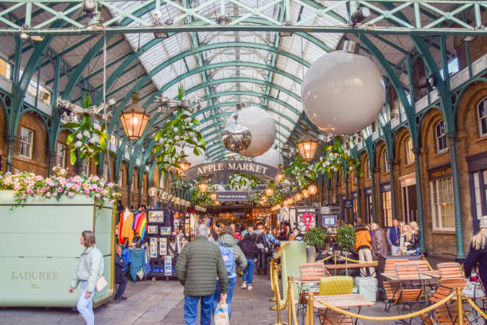

[코벤트 가든과 대영박물관] 예술과 일상이 공존하는 런던의 낮

런던에서 예술과 일상이 자연스럽게 공존하는 곳을 찾는다면, 주저 없이 **코벤트 가든(Covent Garden)**을 추천할 수 있다. 고풍스러운 건축물과 유리 천장 아래 펼쳐지는 거리 공연, 세련된 상점들과 감성 가득한 카페가 어우러진 이곳은, 런던의 ‘살아 있는 문화’를 오감으로 체험할 수 있는 장소다.
광장 중심에서는 하루에도 수차례 다양한 거리 공연이 펼쳐진다. 바이올린 연주, 저글링, 마임, 클래식 오페라까지 — 각기 다른 예술가들이 돌아가며 무대를 만들고, 지나가는 사람들은 발걸음을 멈추고 자연스럽게 관객이 된다. 연주가 끝난 후 관객들이 전하는 박수와 동전은 그 자체로 예술에 대한 런던 시민들의 존중을 보여주는 장면이다.
코벤트 가든에서 도보로 10분 거리에는 세계적인 문화 유산의 보고, **대영박물관(The British Museum)**이 자리하고 있다. 이 박물관은 고대 이집트부터 메소포타미아, 중국, 인도, 유럽까지 수천 년에 걸친 인류의 역사와 문화를 전시하고 있으며, 입장료는 무료다. 건물에 들어서는 순간, 중앙의 거대한 유리 돔 천장이 햇빛을 반사하며 압도적인 분위기를 자아낸다.
가장 유명한 전시품 중 하나는 바로 **로제타 스톤(Rosetta Stone)**이다. 이 고대 유물은 고대 이집트 문자의 해독에 결정적인 열쇠를 제공했고, 그 주변은 언제나 관람객들로 붐빈다. 그 외에도 파르테논 신전의 조각상, 중국 도자기, 아프리카 가면 등 전 세계의 문화유산이 세심하게 전시되어 있어, 하루로는 다 둘러보기 어려울 정도다.
대영박물관은 단순한 전시 공간이 아니라, 런던 시민과 여행자 모두에게 열려 있는 문화 광장이기도 하다. 일부 공간에는 자유롭게 앉아 책을 읽거나 노트북을 펼치는 이들이 있고, 학교 단체나 예술가들의 스케치 활동도 자주 볼 수 있다. 대형 홀 한가운데에서 바라보는 고대 유물과 현대적 건축물의 조화는, ‘시간의 레이어’를 마주한 듯한 경외감을 선사한다.
코벤트 가든과 대영박물관은 서로 다른 공간이지만, 이상하리만큼 잘 어울린다. 한쪽은 열정과 감성의 무대이고, 다른 쪽은 지식과 깊이의 보고다. 아침에는 거리 예술가의 음악에 이끌려 웃게 되고, 오후에는 고대 문명과 마주하며 조용한 사유에 잠긴다. 그리고 그 두 경험은 런던이라는 도시가 가진 ‘다층적 매력’을 가장 잘 보여준다.
두 곳을 모두 돌아본 후에는 근처 카페에서 커피 한 잔의 여유를 가져보자. 코벤트 가든 안쪽 골목에는 현지인들만 아는 조용한 베이커리도 있고, 대영박물관 옆 거리에는 작지만 독특한 서점과 소규모 전시관도 곳곳에 숨어 있다. 런던은 빠르게 움직이는 도시지만, 이렇게 잠시 멈춰 숨을 고를 수 있는 공간이 많기에 여행자에게 더없이 따뜻하다.
코벤트 가든과 대영박물관. 서로 다른 결을 가진 두 공간이지만, 그 사이를 오가며 하루를 보낸다면, 예술과 일상, 과거와 현재를 동시에 체험한 듯한 깊은 만족감을 느끼게 될 것이다.
런던이 단지 ‘유명한 도시’가 아니라 ‘살아 있는 이야기의 집합체’라는 걸 느끼고 싶다면, 이 두 장소를 꼭 걸어보자. 누군가는 거리 공연의 미소 속에서, 누군가는 고대 유물의 흔적 속에서, 자신만의 런던을 발견하게 될 것이다.